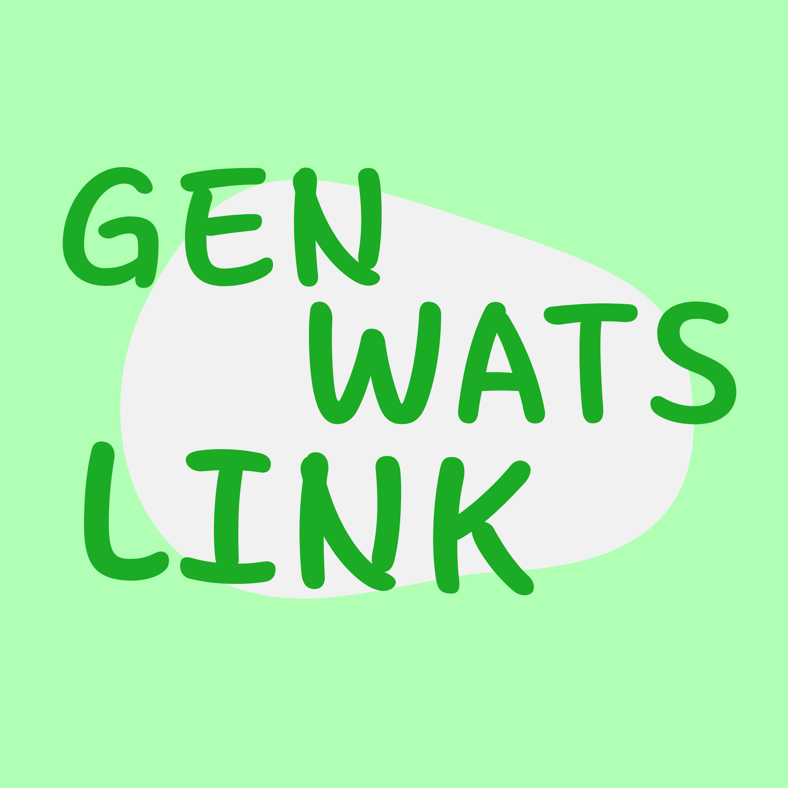

Crie links incríveis no WhatsApp
com mensagens personalizadas gratuitamente
O Genwatslink é uma ferramenta utilitária digital projetada para facilitar o contato comercial e pessoal no WhatsApp. O objetivo principal da plataforma é transformar números de telefone convencionais com DDD em links diretos clicáveis (usando o formato oficial wa.me), removendo atritos de comunicação na internet.
Como a ferramenta ajuda o usuário:
• Fim da agenda cheia: O cliente não precisa adicionar o número do celular aos contatos do aparelho apenas para mandar uma mensagem inicial.
• Agilidade no atendimento: Reduz o caminho que o cliente faz desde o anúncio ou rede social até a janela de conversa com a empresa.
• Uso totalmente gratuito: A geração de links não possui taxas, limites de cliques ou cobrança por volume de uso.
Casos de uso ideais para o Genwatslink:
• Biografias de redes sociais: Perfeito para inserir no link do perfil do Instagram, TikTok ou páginas do Facebook.
• Botões em sites: Ideal para configurar botões flutuantes de "Fale Conosco" em páginas de vendas (landing pages).
• Anúncios online: Utilizado para direcionar o público de campanhas pagas (como tráfego pago) diretamente para o time de conversão.
• Cartões de visita digitais: Facilita o compartilhamento do contato profissional em formato PDF ou QR Code.